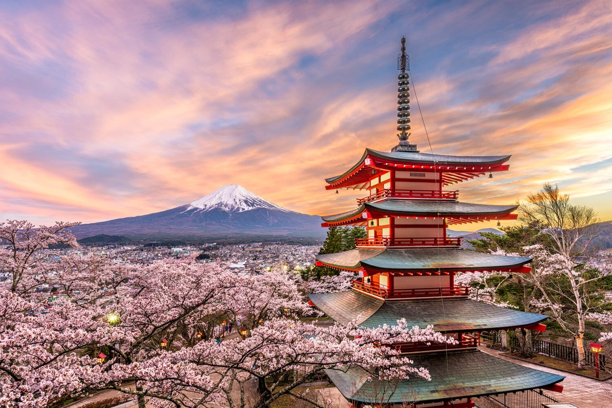

ПОНУДА ЦЕЛА ГОДИНА

ТОКИО И КЈОТО
Токио и Кјото, Јапонија
12.04 - 22.04
Откријте ја фасцинантната Јапонија, земја каде традицијата и модерниот живот се спојуваат во совршена хармонија. Истражете го динамичниот Токио со неговите облакодери, светлечки улици и модерна култура, а потоа отпатувајте до мирниот Кјото, познат по прекрасните храмови, градини и традиционалните јапонски квартови. Незаборавно патување исполнето со култура, историја и авантура.
ЈАПОНСКА АВАНТУРА
Главниот град на Јапонија и еден од најмодерните и највозбудливите градови во светот. Токио е познат по уникатната комбинација на модерна архитектура, неонски улици, традиционални храмови и живописни градски квартови. Посебно впечатливи се Шибуја, Харајуку и Омотесандо, каде посетителите можат да уживаат во шопинг, локалната атмосфера и динамичниот начин на живот.
Еден од најпознатите традиционални делови на Токио, каде се чувствува духот на стар Јапон. Главна знаменитост е храмот Сенсо-џи, најстариот храм во Токио, до кој води живописната улица Накамисе исполнета со традиционални продавници и штандови. Асакуса нуди прекрасна можност за прошетка, фотографирање и запознавање со јапонската култура и традиција.
Поранешната царска престолнина и културното срце на Јапонија, познато по своите древни храмови, традиционални дрвени куќи, градини и живописни улици. Особено впечатлив е квартот Гион, познат по својата автентична атмосфера и традиционалната јапонска архитектура. Кјото е идеално место за запознавање со богатата историја, култура и традиција на Јапонија.
Една од највпечатливите комбинации на културни и природни знаменитости во Кјото. Фушими Инари е познато по илјадниците црвени тории порти кои се протегаат по шумските патеки на планината. Арашијама, пак, е позната по прекрасната бамбусова шума, зелените предели и мирната атмосфера, создавајќи совршена можност за прошетка и фотографирање.
Еден од најголемите и најживописните градови во Јапонија, познат по својата модерна атмосфера, уличната гастрономија и живописните квартови. Особено позната е областа Дотонбори, препознатлива по неонските реклами, бројните ресторани и динамичните улици. Осака нуди одлична комбинација на модерна јапонска култура, шопинг, забава и традиционални знаменитости.
Состанок со групата на аеродром во Скопје, 2 часа пред летот. Следува директен лет до Истамбул па директен лет до Токио и пристигнување на еден од аеродромите во Токио. По завршувањето на аеродромските процедури следува организиран трансфер до хотелот и сместување. По сместувањето е предвидено време за одмор и освежување. Попладнето следува прва прошетка низ околината и запознавање со градот. Вечерта е слободна за вечера и индивидуални активности. Ноќевање во хотел.
Појадок во хотелот и организирано разгледување на модерниот Токио. Следува посета на Шибуја и познатиот Шибуја премин, како и прошетка низ околните улици и модерните градски квартови. Потоа следува посета на Харајуку и прошетка по Такешита улицата, со време за фотографирање, шопинг и индивидуално разгледување. Во продолжение следува посета на Омотесандо и слободно време за ручек и кафе. Попладнето е предвидено за дополнителна прошетка и слободно време. Вечерта е слободна за вечера и индивидуални активности. Ноќевање во хотел.
Појадок во хотелот и организирана посета на Асакуса, еден од најпознатите делови на Токио. Следува посета на храмот Сенсо-џи и прошетка по улицата Накамисе, со можност за фотографирање и разгледување на локалните продавници и штандови. Потоа следува прошетка покрај реката Сумида и слободно време за ручек. Во попладневните часови е предвидена посета на Уено и слободно време за индивидуално разгледување. Вечерта е слободна за одмор, вечера и индивидуални активности. Ноќевање во хотел.
Појадок и одјавување од хотелот. Следува организирано патување со брз воз кон Кјото. По пристигнувањето следува трансфер до хотелот и оставање на багажот. Потоа е предвидено разгледување на централните делови на Кјото, со прошетка низ традиционалните улици и околината на Гион. Следува слободно време за ручек, кафе, фотографирање и индивидуално разгледување. Попладнето е предвидено за дополнителна прошетка низ градот. Вечерта е слободна за вечера и одмор. Ноќевање во хотел во Кјото.
Појадок во хотелот и организирано разгледување на Кјото. Следува посета на познатото светилиште Фушими Инари, препознатливо по илјадниците црвени тории порти кои водат по планината. Потоа следува посета на Арашияма и прошетка низ познатата бамбусова шума. Предвидено е време за фотографирање и уживање во природата. Следува слободно време за ручек и индивидуални активности. Попладнето е предвидено за враќање во центарот на Кјото и слободна прошетка. Вечерта е слободна за одмор и вечера. Ноќевање во хотел во Кјото.
Појадок во хотелот и организирано заминување кон Осака. По пристигнувањето следува разгледување на главните делови на градот. Предвидена е посета на областа Дотонбори и прошетка низ живописните улици, со можност за фотографирање и уживање во локалната атмосфера. Потоа следува слободно време за ручек, шопинг и индивидуално разгледување. По желба, предвидена е можност за посета на замокот Осака, согласно расположливото време. Во попладневните часови следува слободно време во центарот на Осака. Вечерта е предвидено враќање и ноќевање во Кјото.
Појадок во хотелот и слободен ден за дополнително разгледување на Кјото. Патниците ќе имаат можност повторно да ги посетат омилените делови од градот, да прошетаат низ традиционалните улици, да посетат локални продавници и градини или да уживаат во локалната гастрономија. Предвидено е слободно време за ручек, кафе, фотографирање и шопинг. Попладнето е слободно за индивидуални активности и одмор. Вечерта е слободна за вечера. Ноќевање во хотел во Кјото.
Појадок и одјавување од хотелот. Следува организирано патување со брз воз назад кон Токио. По пристигнувањето следува трансфер до хотелот и сместување. Остатокот од денот е предвиден за слободна прошетка низ градот. Патниците ќе имаат време за шопинг, фотографирање и индивидуално разгледување. Вечерта е слободна за вечера и уживање во последните денови од престојот. Ноќевање во хотел.
Појадок во хотелот и слободен ден за дополнително разгледување на Токио. Предвидено е време за шопинг, посета на омилените градски квартови, локални продавници, кафулиња и ресторани. Патниците ќе имаат можност за последна прошетка низ Шибуја, Харајуку или други делови од градот според индивидуалните интереси. Попладнето е предвидено за одмор и подготовка за заминување. Вечерта е слободна за последна вечера во Токио. Ноќевање во хотел.
Појадок во хотелот и одјавување согласно предвиденото време. По собирањето на багажот следува организиран трансфер до аеродромот во Токио. По пристигнувањето следува пријавување за летот и завршување на потребните аеродромски процедури. Потоа следи диретен лет до Истамбул, па директен лет до Скопје. По пристигнувањето и преземањето на багажот завршува организираното патување.